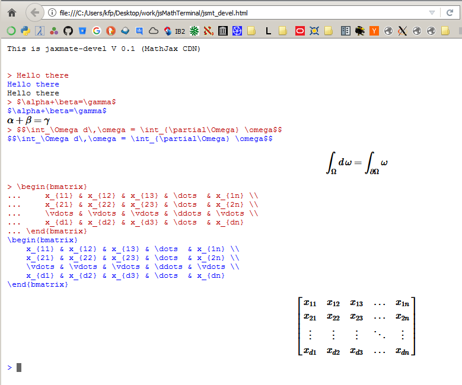

![]( "De <-> En")
![]( "Google")

![]( "IMDB")
![]( "Wikipedia (en)")
JaxMaTe (MathJax enabled Mathematics Terminal) is a generic web interface to various mathematical software that is able to emit LaTeX code. The general idea is that it behaves like a common terminal/console, however, it runs in a browser (HTML widget) and renders any output enclosed in $ or $$ with MathJax.
MathJax has the advantage (compared to other methods, e.g. sixel graphics in XTerm, MinTTy, LaTeX2Sixel) that it is easy to get/copy the TeX source code and to manipulate the appearance of the rendering (by right clicking on the output).
Note that jaxMaTe is conceptually different from so called notebooks, like in Jupyter or SAGE. It is intended as a terminal and as such its primary purpose is to be a tool supporting readability of interpreter's console output.
| Name | Wikipedia article | Homepage |
|---|---|---|
| MathJax | mathjaxWP | mathjaxHome |
| jQuery | jqueryWP | jqueryHome |
| jq-console | jqconsoleGitHub | |
| node.js | nodejsWP | nodejsHome |
| Socket.IO | socketioWP | socketioHome |
| npm | npmWP | npmHome |
| NW.js | optional | nwjsHome |
There is a single HTML file test client (jsmt_devel.html) in order to test the MathJax capabilities and the styling (CSS) of the console. There is no functionality other than echoing the input as text and/or adding a div element which will be rendered
...
jqconsole.Write(input + '\n', 'jqconsole-output');
jqconsole.Append($('<div id=' + divID + '>' + input + '</div>'));
MathJax.Hub.Queue(["Typeset",MathJax.Hub,divID]);
--> divID+++
All javascript code (except MathJax) is included as readable source in the html file. The output is just like the picture at the beginning.
The following code shows the principle of communication to a REPL (pure as an example)
const { spawn } = require('child_process'); const child = spawn('pure', ['-i']); var input = process.stdin.pipe(child.stdin); input.on('end', () => {console.log('Goodbye\n'); process.exit() }); input.write('let x=123;let x=x+1;'); child.stdout.on('data', (data) => { console.log(`child stdout:\n${data}`); if (data=='exit\n') {input.write('quit'); input.end();}; });
Including the code snippet above into a file called test.js, we can test as follows:
C:\Users\kfp\Desktop\work\nodeJS>node test.js child stdout: __ \ | | __| _ \ Pure 0.68 (i686-w64-mingw32) | | | | | __/ Copyright (c) 2008-2018 by Albert Graef .__/ \__,_|_| \___| (Type 'help' for help, 'help copying' _| for license information.) Loaded prelude from C:/msys64/mingw32/lib/pure/prelude.pure. child stdout: > x+2; child stdout: 126 > quit Goodbye C:\Users\kfp\Desktop\work\nodeJS>
The principle of a (node) server looks as follows (pure_server.js)
var port = 3010; var clientHTML = '/pure_client.html'; var http = require('http'); var express = require('express'); var app = express(); var server = http.createServer(app); // Passing the http.Server instance to the listen method var io = require('socket.io').listen(server); // The server starts listening server.listen(port); console.log ("Welcome to xyz"); console.log("Pure Server listening on port " + port.toString()); // Registering the route of your app that returns the HTML start file app.get('/', function (req, res) { console.log("App root"); res.sendFile(__dirname + clientHTML); }); // Expose the node_modules folder as static resources // (to access socket.io.js in the browser) // maybe path.join(__dirname, 'directory') app.use('/static', express.static('node_modules')); // Handling the connection io.on('connection', function (socket) { console.log(socket.handshake); // a lot of data without .handshake console.log("Client X connected @"); socket.on('pure_eval', function (data) { console.log('Pure input '+data.id+': '+data.data); // EVAL HERE socket.emit('pure_output',{id:data.id, data:'answer:'+data.data}); }); socket.on('disconnect', function(){console.log('Client disconnect ...');}); });
It's very simple, indeed, but there is no real evaluation yet (the child process will come in where //EVAL HERE is a placeholder. Of coure it is rather generic because the details might be dependent on the REPL language.
The client (pure_client.html) is essentially the same as jsmt_devel.html, but without javascript sources, i.e. more precisely, the .js files will be served by the node.js server itself (actually from node_modules).
<!DOCTYPE html> <html> <head> <meta http-equiv="content-type" content="text/html; charset=utf-8"> <!-- @STYLE SECTION --> <style> .. --> omitted .. </style> <!-- SCRIPT CONFIG VARS --> <script> jxmt_start_msg="This is jaxmate-devel V 0.2 (node pure_Server/MathJax)\n\n\n"; jxmt_prompt="> "; jxmt_cfg_prefix="@"; jxmt_div_prefix='MathDiv'; jxmt_text_output=true; jxmt_mathjax_output=true; </script> <!-- @SCRIPT MATHJAX CONFIG --> <!-- http://docs.mathjax.org/en/latest/configuration.html --> <script type="text/x-mathjax-config"> MathJax.Hub.Config({tex2jax:{inlineMath:[['$','$']]}, CommonHTML: { linebreaks: { automatic: true }, scale: 130 }, "HTML-CSS": { linebreaks: { automatic: true }, fonts: ["TeX"], scale: 130}, SVG: { linebreaks: { automatic: true } }}); </script> <!-- @SCRIPT MATHJAX CDN <script src='https://cdnjs.cloudflare.com/ajax/libs/mathjax/2.7.5/ latest.js?config=TeX-AMS-MML_HTMLorMML' async> </script> --> <title>Pure Client</title> </head> <body> <!-- @DIV CONSOLE --> <div id="console"></div> <!-- --> <script src="/static/socket.io-client/dist/socket.io.js"></script> <script src="/static/jquery/dist/jquery.js"></script> <script src="/static/jq-console/lib/jqconsole.js"></script> <script src="/static/mathjax/MathJax.js?config=TeX-AMS-MML_HTMLorMML" async></script> <script> var socket = io('http://localhost:3010'); socket.on('connect', function(){socket.emit('do something',{})}); socket.on('myevent', function(data){}); socket.on('disconnect', function(){}); </script> <!-- @SCRIPT START --> <script> $(function () { var jqconsole = $('#console').jqconsole(jxmt_start_msg, jxmt_prompt); var idc=0; // div id counter var out={id:"",data:""}; // data format function jxmt_cfg_handler (s) { jqconsole.SetPromptLabel('cfg> ') jqconsole.Write("cfg\n", 'jqconsole-output'); if (s=="@text off") {jxmt_text_output=false;}; if (s=="@text on") {jxmt_text_output=true;}; if (s=="@quit") {jqconsole.SetPromptLabel(jxmt_prompt);}; }; // Output coming from server (after emission of 'pure_eval') socket.on('pure_output', function(data){ out=data; if (jxmt_text_output) { jqconsole.Write(out.data + '\n', 'jqconsole-output'); }; if (jxmt_mathjax_output) { document.getElementById(out.id).innerHTML=out.data; MathJax.Hub.Queue(["Typeset",MathJax.Hub,out.id]); }; //https://www.w3schools.com/jsref/met_element_scrollintoview.asp document.getElementById(out.id).scrollIntoView(); //cool }); var startPrompt = function () { // Start the prompt with history enabled. jqconsole.Prompt(true, function (input) { // Output srvdata with the class jqconsole-output. // div counter var divID=jxmt_div_prefix + idc; // cfg_handler if (input.startsWith(jxmt_cfg_prefix)) {jxmt_cfg_handler(input);startPrompt();} else { socket.emit('pure_eval',{id:divID,data:input}); // socket emit -> send input //jqconsole.Write(out.data + '\n', 'jqconsole-output'); jqconsole.Append($('<div id=' + divID + '></div>')); //MathJax.Hub.Queue(["Typeset",MathJax.Hub,divID]); idc++; // Restart the prompt. startPrompt();}; }); }; startPrompt(); }); </script> </body> </html>
Now we may include the child process to the server code, getting a working prototype
// Spawning App const { spawn } = require('child_process'); const child = spawn('pure', ['-i']); var input = process.stdin.pipe(child.stdin); input.on('end', () => {console.log('Goodbye\n'); process.exit() }); input.write('let x=123;let x=x+1;'); // Server var port = 3010; var clientHTML = '/pure_client.html'; var http = require('http'); var express = require('express'); var app = express(); var server = http.createServer(app); // Passing the http.Server instance to the listen method var io = require('socket.io').listen(server); // Child on data event child.stdout.on('data', (data) => { console.log(`child stdout:\n${data}`); io.emit('pure_output',{id:data.id, data:'child:'+data}); if (data=='exit\n') {input.write('quit'); input.end();}; }); // The server starts listening server.listen(port); console.log ("Welcome to xyz"); console.log("Pure Server listening on port "+ port.toString()); // Registering the route of your app that returns the HTML start file app.get('/', function (req, res) { console.log("App root"); res.sendFile(__dirname + clientHTML); }); // Expose the node_modules folder as static resources // (to access socket.io.js in the browser) // maybe path.join(__dirname, 'directory') app.use('/static', express.static('node_modules')); // Handling the connection io.on('connection', function (socket) { //console.log(socket.handshake); // a lot of data without .handshake console.log("Client X connected @"); socket.on('pure_eval', function (data) { console.log('Pure input '+data.id+': '+data.data); input.write(data.data+'\n'); socket.emit('pure_output',{id:data.id, data:'answer:'+data.data}); }); socket.on('disconnect', function(){console.log('Client disconnect ...');}); });
Start the server:
node pure_server.js
Start the client:
(firefox) localhost:3010